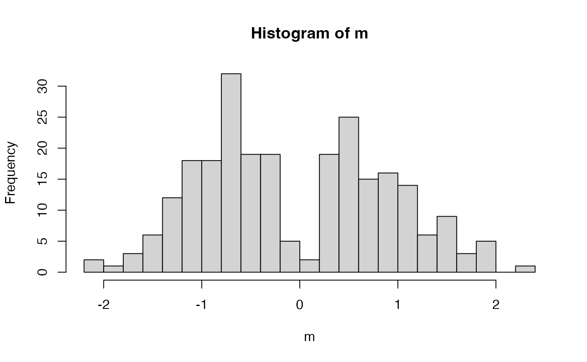
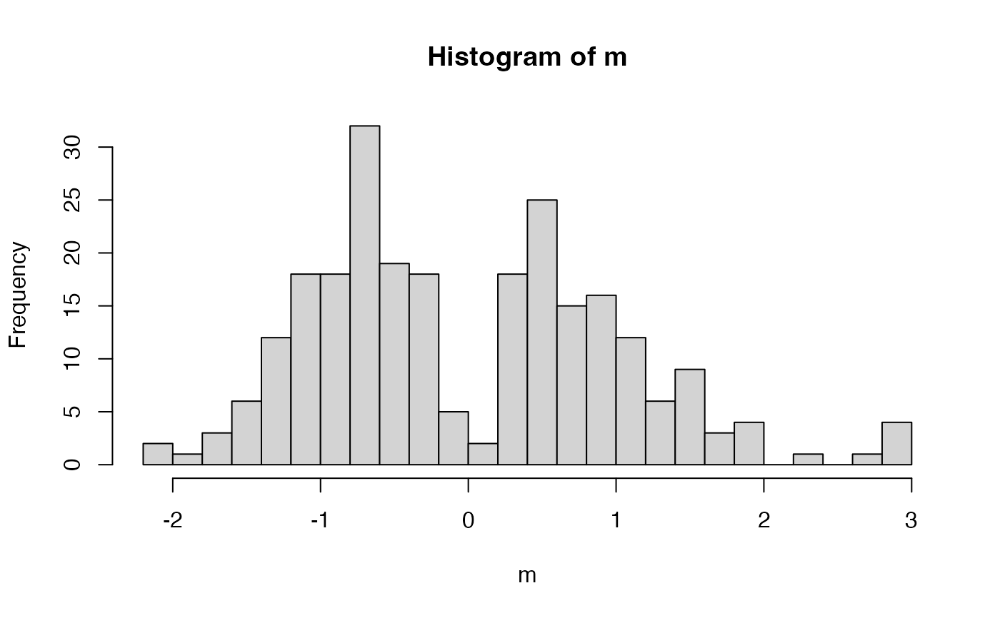

This is based on the mirror statistic in Dai et al. (2022). The idea is that,
if a feature is null, the sign of the effect is as likely to be positive or
negative (this symmetry supports FDR estimation). If there is a real effect,
then the signs are more likely to agree (sign == 1 below) and the magnitude
should be large.
Usage
consistency_mirror(effects)
Arguments
- effects
A list of arrays containing estimated partial dependence
effects. The list indexes different splits. Within each list element, the
expected dimensions are n_taxa x time_lag x random_split_index.
Examples
effects <- matrix(rnorm(500), 250, 2)
m <- consistency_mirror(effects)
hist(m, 20)

# long tail on the right is the real effect
effects[1:5, ] <- runif(10, 2, 4)
m <- consistency_mirror(effects)
hist(m, 20)
